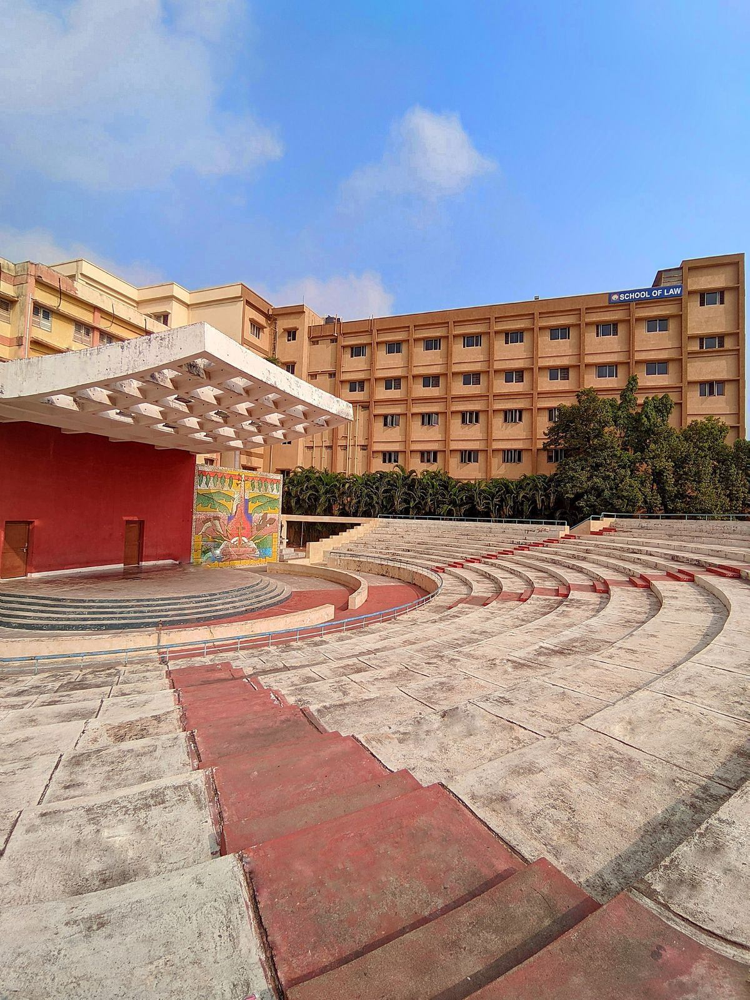
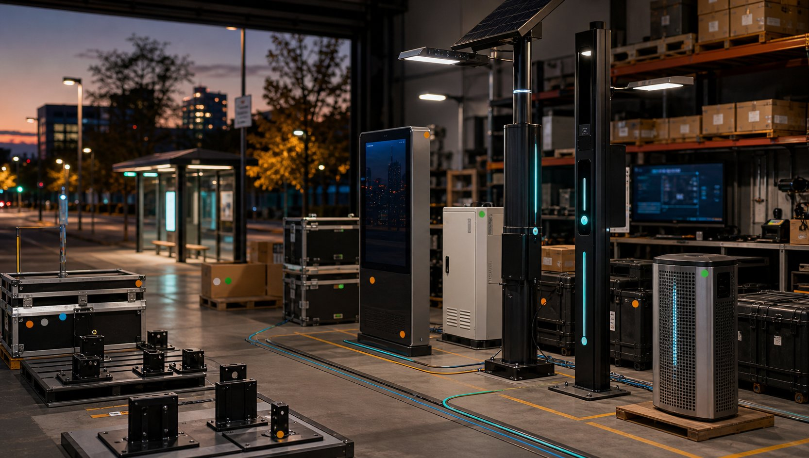

Interchange Choose your path
Two routes. One accountable layer.
ARXI sits between real public-sector problems and the solution ecosystem that can solve them.
For Agencies
Reduce procurement risk before scale.
- Clarify scope and site needs
- Match technology to real operating conditions
- Pilot before full deployment
- Coordinate vendors, install paths, and support
For Manufacturers
Enter public-sector markets correctly.
- Public-sector representation
- Bid/RFP and specification literacy
- Pilot-first market entry
- Field intelligence from agency conversations
Manufacturers should not have to guess their way through public-sector procurement.
ARXI becomes the accountable layer between need, solution, pilot, and deployment.
RT-002 What ARXI Does
We align the parts so agencies are not left holding the integration risk.
ARXI may build, represent, source, or integrate depending on the project. The promise is accountability for the path, not a claim that every component comes from one factory.
Source
Find the right fit.
Identify products and partners that match site conditions, budgets, procurement constraints, and public trust requirements.
Represent
Bring credible lines forward.
Help manufacturers position, document, and support smart infrastructure products for public-sector buyers.
Integrate
Coordinate the system.
Align power, connectivity, sensing, displays, installation, data practices, and support responsibilities.
Pilot
Test before scaling.
Use scoped pilots to reduce risk, educate teams, and turn conceptual value into field evidence.
Agency Need
Problem, location, constraints, procurement path.
ARXI Accountability Layer
Scope, source, vet, represent, integrate, pilot, support.
Manufacturer Partners
Qualified components, documentation, lead times, support.
Integrated Infrastructure
Power, displays, sensors, shelters, poles, connectivity.
Measured Outcome
Decision support for scale, adjustment, or replacement.
RT-003 Solution Domains
A strategic capability map for smarter public space.
The work spans transit, parks, campuses, airports, public works, corridors, and resilient civic infrastructure.
D-01
Mobility & Transit
Stops, shelters, smart poles, arrival displays, rider experience, accessibility.
D-02
Energy & Grid
Solar lighting, battery storage, resilient power, site feasibility.
D-03
Environment & Climate
Air quality, heat, flooding, tree canopy, sustainability reporting.
D-04
Water & Waste
Remote monitoring, field telemetry, maintenance visibility, public works support.
D-05
Safety & Resilience
Lighting, alerts, emergency management, non-invasive presence sensing.
D-06
Connectivity & Digital Equity
Public information, digital displays, networked amenities, corridor intelligence.
ARXI
Transit
Energy
Parks
Airports
Public Works

Corridors
ARXI frames smart districts as layered public infrastructure, not disconnected devices.

Public Space
Parks, trails, campuses, and civic nodes need power, visibility, information, and maintenance logic that fits the place.
RT-004 Flagship System
Smart shelter infrastructure as a configurable system.
ARXI can support direct sales, manufacturer representation, or integrated packages depending on project needs.
Solar + storage
Power strategy matched to site exposure, load, resilience, and maintenance realities.
Connectivity + telemetry
Field visibility for status, uptime, and maintenance planning without unnecessary tracking.
Displays + ADA experience
Information layers for arrivals, alerts, wayfinding, and public communication.
Lighting + sensing
Presence-aware public-space intelligence using privacy-first principles and no facial recognition.
RT-005 Planning & Intelligence
Decision support for the work before and after installation.
ARXI uses planning views, feasibility signals, grant alignment markers, and pilot indicators to help teams make better infrastructure decisions.
- Asset and modernization mapping
- Site feasibility and phasing
- Staff education and deployment planning
- Reporting that supports decisions without fake precision

Planning Layer
Before hardware is installed, ARXI helps translate sites, constraints, and stakeholder realities into a defensible pilot path.
Pilot Control Board
ScopeDefined
GrantAligned
PrivacyProtected
Solar exposure reviewReady
Procurement pathwayNeeds owner
ADA/user experienceMapped
Data handlingNo resale
RT-006 Sourcing Model
Not every project needs the same answer.
ARXI helps identify the right path, then takes responsibility for aligning the parts.
ARXI-Built
Prototype and product depth.
In-house development can support pilot-ready concepts and technical credibility where ARXI is the right builder.
Partner-Manufactured
Represented product lines.
Manufacturer partners bring proven components, categories, and production capacity into public-sector channels.
Integrated Packages
One coordinated outcome.
Components, services, and support can be combined into packages that make sense for the agency and procurement path.
RT-007 Pilot Program
Start small enough to learn. Structure it well enough to scale.
A focused pilot helps agencies reduce risk before full-scale procurement and gives manufacturers better field intelligence than a cold sales cycle.
Discover
Define need and constraints.
Audience, sites, procurement path, stakeholders, funding signals, and success criteria.
Design
Shape the pilot package.
Solution model, technical scope, responsibilities, data principles, and deployment plan.
Deploy
Install and support the field test.
Coordinate vendors, site logistics, staff education, monitoring, and adjustment.
Decide
Use evidence to choose the next step.
Scale, revise, replace, or pause with a clearer view of cost, risk, and value.

Pilot Reality
Focused pilots let agencies test rider experience, power, maintenance, data, and procurement logic in the field.

Operations
The deployment path includes uptime, support, ownership, documentation, and what happens after installation.
RT-008 For Agencies
Preview: procurement-smart support for public infrastructure teams.
ARXI helps translate messy site needs into practical, pilot-ready systems across mobility, public space, resilience, and civic intelligence.
Agency Path
Transit & Mobility
Stops, shelters, passenger information, lighting, ADA messaging, and pilot models that can scale corridor by corridor.

Agency Path
Public Space & Resilience
Parks, trails, smart corridors, backup power, emergency messaging, and maintenance visibility without unnecessary tracking.

Agency Path
Civic Intelligence & Planning
Site scoring, solar feasibility, grant alignment, pilot readiness, and planning views that help justify investment.
RT-009 For Manufacturers
Preview: a selective public-sector channel, not a logo collector.
ARXI helps product companies become understandable, spec-ready, pilot-ready, and credible to agencies.

Manufacturer Path
Product Fit
Review market fit, deployment requirements, documentation, support model, privacy posture, and public-sector readiness.
Manufacturer Path
Public-Sector Positioning
Translate product strengths into agency scenarios, procurement language, differentiators, and practical use cases.
Manufacturer Path
Pilot & Representation Path
Shape pilot bundles, support agency education, track opportunities, and turn field feedback into channel intelligence.
RT-010 Technology Layer
Public trust is the foundation layer.
Smart infrastructure should improve public space without turning every public space into a surveillance product.
L1
Privacy-first data principles
No facial recognition, no unnecessary tracking, no data resale.
L2
Solar + resilient power
Power strategy shaped by site, load, maintenance, and uptime needs.
L3
Connectivity
Network choices that fit corridor, campus, shelter, and remote field conditions.
L4
Sensors and field telemetry
Presence, environment, asset health, and maintenance signals without identity capture.
L5
Digital experience
Displays, alerts, wayfinding, and public information interfaces.
L6
Analytics and reporting
Decision support for pilots, grants, operations, and long-term planning.
RT-011 Use Cases
Scenario cards, not product SKUs.
ARXI frames use cases around the public-space problem first, then identifies the right technology path.
Bus stops
Lighting, arrival information, shelter upgrades, rider safety, solar feasibility.
Parks
Lighting, environmental sensing, wayfinding, maintenance signals, trailheads.
Trails
Solar information points, non-invasive presence sensing, emergency messaging.
Campuses
Mobility nodes, digital signage, safe corridors, connected amenities.
Airports
Ground transportation zones, secure-area constraints, passenger information.
Downtown corridors
Smart poles, public Wi-Fi support, lighting, wayfinding, resilience.
Emergency management
Alerts, backup power, situational data, public communication nodes.
Public works
Asset visibility, telemetry, service planning, water/waste monitoring support.
RT-012 About / Credibility
Built around procurement reality, not demo-day theater.
ARXI is built around a practical infrastructure reality: agencies do not just need products, and manufacturers do not just need introductions. Both sides need an accountable layer that understands the product, procurement path, and field conditions at the same time.
B2G pipeline discipline
ARXI frames public-sector opportunities around long-cycle sales realities, documentation quality, agency risk, and deployment support.
Procurement-cycle fluency
Practical understanding of long public-sector sales cycles, bid stages, proposals, and portals.
Government contracting literacy
Experience with quoting, solicitations, cooperative contract management, and rep-network coordination.
Civic sustainability grounding
Projects are framed around resilience, public trust, operational practicality, and responsible public-space technology.
RT-013 Terminus
Start with a pilot. Scale with confidence.
Tell ARXI what you are trying to move: an agency project, a manufacturer product line, or a smart infrastructure plan that needs a credible path.
Static-hosting friendly: this form currently opens an email draft after validation and can later be wired to Formspree, Netlify Forms, Basin, or another handler.